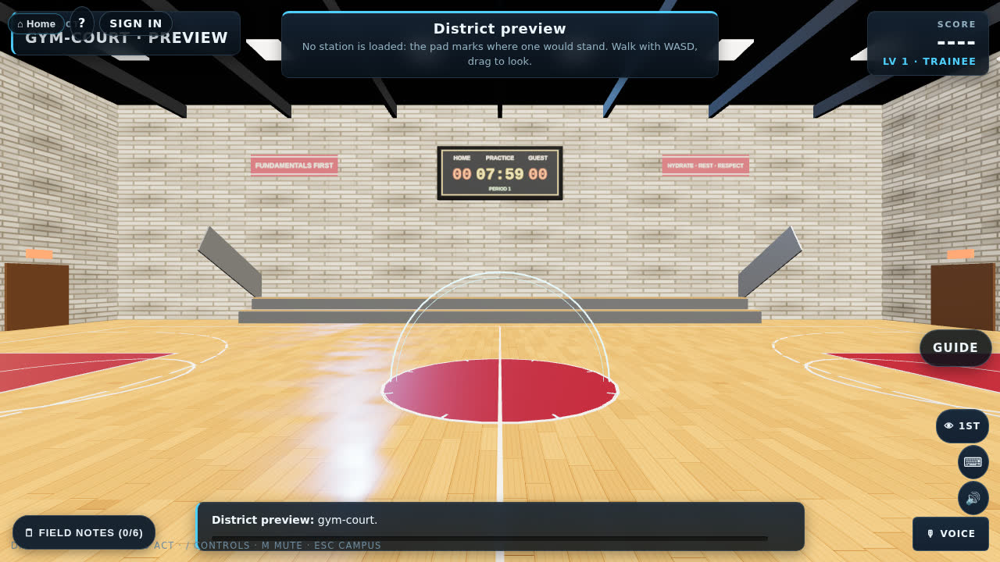
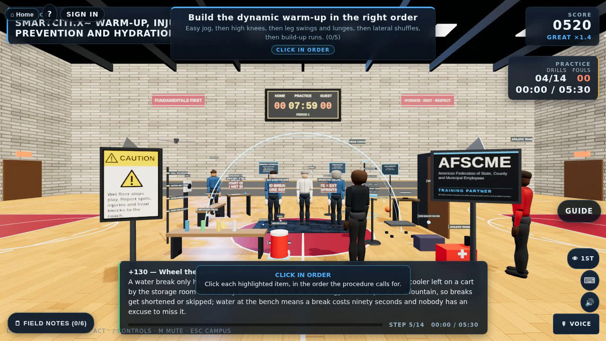
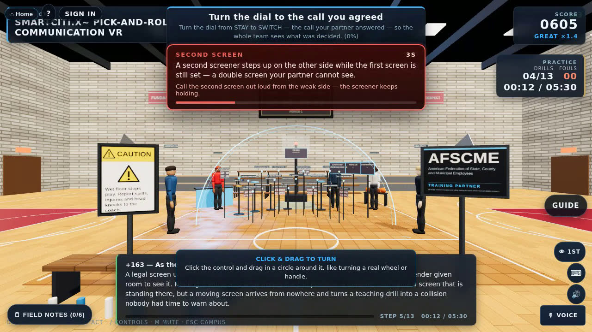
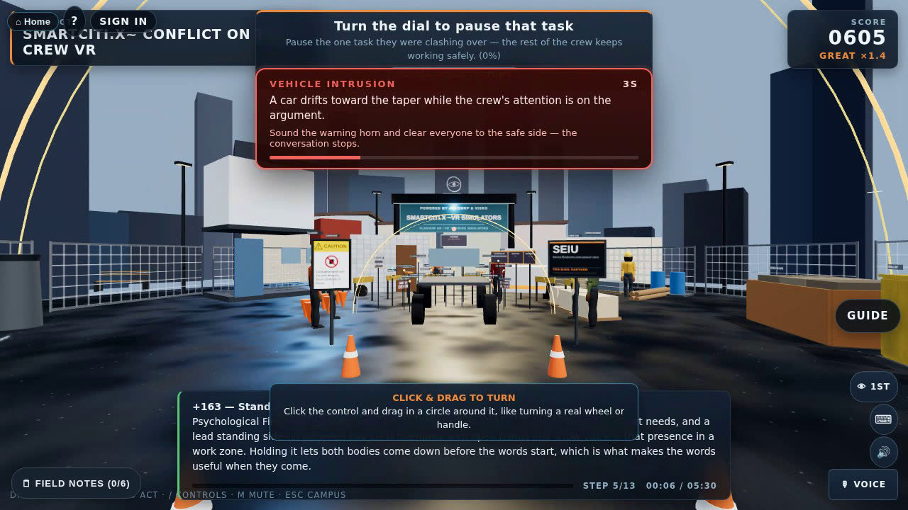
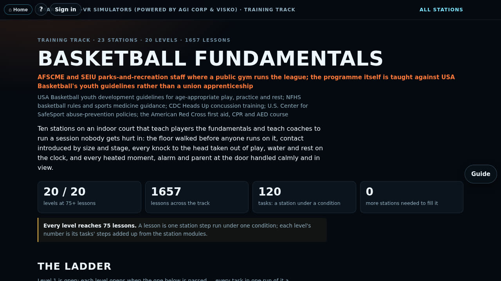
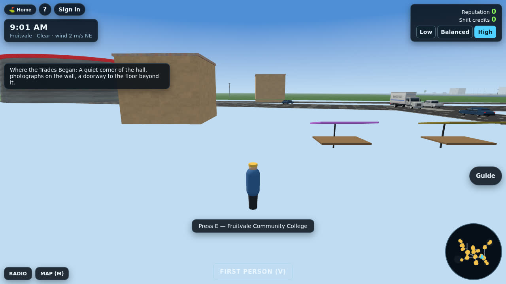

Sport psychology as the stations actually teach it: communication before movement, composure after a mistake, reading teammates, repairing a conflict, leading a huddle and knowing your role. Practised on a virtual gym floor in a phone, laptop or headset browser.
Prepared for a demo meeting with a youth-sport and coaching partner team. Built from catalog curriculum basketball-fundamentals (23 stations) and the ei- strand of civic-leadership-and-ei (3 stations). Every figure below is computed from the repository.
Recorded headless from the prototype: the home page, the basketball track page, the gym-court district, the first steps of seven real station runs and the Teamwork side quest's site in Bay World. The station runs are driven by script, so the moves are faster than a learner's.
Every basketball station stands on the gym-court district: a maple floor with painted lanes, a hoop behind each baseline, bleachers and a scoreboard on the far wall. The learner starts at the near bleachers facing centre court and works a station of 13–14 steps using up to 8 interaction kinds (find, select, drag, sequence, hold, gauge, turn, track).
Each station scores 4 unsafe actions and fires 2 interruptions mid-run that need a different control: a player down, a heated moment, a bad call, a parent at the door.
The scoreboard chip on the HUD. The district names the labels; every number is the run's own: steps cleared, unsafe actions as fouls, and the clock against par. It turns amber on a foul and red past par. The values shown are the ones check_districts.mjs tests.
A lesson is one station step under one condition; see docs/ladders.md. Both ladders have all 20 levels full at a lesson bar of 75.
Talk before you move. The screen called by whoever sees it, the switch agreed out loud, the help announced.
Pick-and-Roll Communication · Help Defence and RotationsOne slow breath, a one-word cue, eyes back on the bench. A routine short enough to use between possessions.
Reset Routine After a Miss · Composure with a Hostile Crowd and OfficialsTrust the rotation behind you, and hear both reads in the huddle before one is chosen.
Help Defence and Rotations · Timeout Huddle and AdjustmentSeparated first, cooled down, heard in turn and repaired for real, on the court and on a work crew.
Teammate Conflict and Accountability · Conflict on the CrewOne fact, one change, one encouragement, and nobody blamed. A calm voice and one clear next step.
Timeout Huddle and Adjustment · Leading Under PressureFive players with five jobs: lanes filled wide, roles held, the extra pass over the hero shot.
Transition Spacing and Roles · Team Offense: Spacing and ScreensName the behaviour, not the person, and take it back without defending.
Coach Feedback and Growth Mindset · Giving and Taking FeedbackA decision order read calmly as the clock runs down, and the morning after a loss: own a part, name one fix, thank who covered.
Final Possession, Decision Under Pressure · Losing Well and Film Review11 of the basketball stations name the Association for Applied Sport Psychology in their certification line; the registry entry reads “Association for Applied Sport Psychology guidance on mental-skills routines for young athletes: composure after a mistake, pre-performance routines, coach feedback and growth mindset, and decision-making under pressure”. These are practice drills for team habits. The prototype makes no clinical or treatment claim and states no performance outcome.
26 stations in four groups. The groups are this page's reading of the catalog order; the order within each follows the catalog. “Fouls” are the unsafe actions a station scores; “eval” is the station's score in tools/eval-content.json.
| Station | What it trains | Steps | Interaction kinds | Fouls it scores | Interruptions | Eval |
|---|---|---|---|---|---|---|
| Fundamentals and a safe sessionDrills on the court, run so nobody gets hurt · 12 stations | ||||||
Warm-Up, Injury Prevention and Hydrationbb-warmup-injury-prevention-and-hydrationBadge: Ready to Play |
The first fifteen minutes of practice: the floor walked dry and clear, the emergency plan read, a health check-in at the door, water at the bench, a dynamic warm-up in order, shoes and jewellery checked and a water break called by the clock | 14 | find · select · drag · sequence · hold · gauge · turn · track |
|
|
97 |
Stance and Ball Handlingbb-stance-and-ball-handlingBadge: Eyes Up |
Balls checked before they are handed out, lanes spaced wide, the triple-threat stance built from the feet up, a pound dribble with the eyes up, work and rest on a timer, and every loose ball racked | 14 | find · gauge · drag · sequence · hold · select · turn · track |
|
|
97 |
Footwork: Pivots and Jump Stopsbb-footwork-pivots-and-jump-stopsBadge: Soft Landings |
The floor felt for sticky and slick patches, the pivot-foot rule explained, a jump stop landed soft and balanced, a half-turn pivot on the ball of the foot, a steady agility ladder, a jump count kept, and a rolled ankle cared for properly | 14 | find · select · sequence · hold · gauge · turn · drag · track |
|
|
97 |
Passing and Catchingbb-passing-and-catchingBadge: Soft Hands |
Every receiver's background checked, names called before passes, a chest pass built in order, target hands up, speed matched to the catcher, the bounce spot set, and any ball to the face taken seriously | 14 | find · select · sequence · hold · gauge · drag · turn · track |
|
|
97 |
Shooting Form and Arcbb-shooting-form-and-arcBadge: Nothing but Arc |
A practice hoop inspected and set to the right height, the ball sized to the hands, the shot built from balance up, the arc held in a band that drops, the release timed at the top, the lane clear and a shot count with rest | 14 | find · select · turn · sequence · hold · track · gauge · drag |
|
|
97 |
Free Throw Routinebb-free-throw-routineBadge: Same Every Time |
The line and lane checked, the lane rules explained, the same routine every time, the shooting foot lined up, a steady tempo, composure held on tired legs, water between rounds and shooters rotated to rest | 14 | find · select · drag · sequence · hold · turn · gauge · track |
|
|
97 |
Defensive Stance and Closeoutsbb-defensive-stance-and-closeoutsBadge: Under Control |
Room to slide checked, active hands instead of reaching, a stance built and held, slides without crossing the feet, closeouts chopped under control and never into a shooter's landing, hips opened to run, and rest between reps | 14 | find · select · sequence · hold · track · gauge · turn · drag |
|
|
97 |
Rebounding and Boxing Outbb-rebounding-and-boxing-outBadge: Sealed and Safe |
The paint cleared, pairs matched by size, the box-out built and the seal held, the jump timed, contact kept controlled, concussion signs recognised, and any knock to the head taken out of play | 14 | find · select · sequence · hold · turn · gauge · track · drag |
|
|
97 |
Team Offense: Spacing and Screensbb-team-offense-spacing-and-screensBadge: Legal and Spaced |
Five spots on the floor, the action drawn first, spacing fixed, an on-ball screen built and held still, the ball kept moving, illegal and blind screens caught, the reads walked, and a rotation with water in it | 14 | find · select · drag · sequence · hold · gauge · turn · track |
|
|
97 |
Scrimmage and Sportsmanship Debriefbb-scrimmage-and-sportsmanship-debriefBadge: Good Game |
The sideline checked, ground rules said, fair teams, short periods, the game's temperature held, minutes shared, tired players rested, sportsmanship noticed, a handshake line, a debrief in order, and a check-in on how everyone is | 14 | find · select · sequence · turn · track · gauge · hold · drag |
|
|
97 |
Layups and Finishing at the Rimbb-layups-and-finishing-at-the-rimBadge: Soft Touch, Clean Line |
The easiest drill on the practice plan is also the most collision-prone: gather, plant, drive, soft touch, and a controlled approach that keeps the line under the rim from becoming a pile-up | 14 | find · hold · select · sequence · turn · track · gauge · drag |
|
|
95 |
Dribble Moves and Change of Pacebb-dribble-moves-and-change-of-paceBadge: Sell It, Then Burst |
A crossover only beats a defender because of what happens around it — a believable slow stretch that makes the sudden burst actually sudden, run low and under control the whole way through | 14 | find · select · sequence · gauge · turn · hold · track · drag |
|
|
95 |
| Composure and mindsetRoutines, composure, feedback and decisions under pressure · 6 stations | ||||||
Reset Routine After a Missbb-reset-routine-after-a-missBadge: Next Play |
One slow breath, a one-word cue, a physical let-it-go and eyes up for the next play — a routine short enough to actually use between one possession and the next | 14 | find · select · hold · sequence · turn · gauge · drag · track |
|
|
96 |
Pre-Game Routine and Visualisationbb-pre-game-routine-and-visualisationBadge: Ready, Not Wound Up |
Gear checked, a genuinely quiet visualisation, a shoot-around and a short captain's word — a calm hour before tip-off instead of a wound-up one | 14 | find · select · hold · sequence · gauge · turn · drag · track |
|
|
97 |
Composure with a Hostile Crowd and Officialsbb-composure-with-a-hostile-crowd-and-officialsBadge: Still in the Game |
A bad call and a heckling parent are not something a player can win an argument with — one breath, a cue word and eyes back on the bench keep the game the one thing still in their control | 14 | find · select · hold · sequence · turn · gauge · drag · track |
|
|
96 |
Teammate Conflict and Accountabilitybb-teammate-conflict-and-accountabilityBadge: Still Teammates |
A flare-up over a loose ball does not end when the whistle blows it dead. Separated first, cooled down, heard in turn and repaired for real. | 14 | find · select · hold · sequence · turn · gauge · drag · track |
|
|
96 |
Coach Feedback and Growth Mindsetbb-coach-feedback-and-growth-mindsetBadge: Correction, Not Collapse |
The same mistake on film either becomes one specific, fixable thing or a verdict on the player watching it — the difference is entirely in how the correction is given | 14 | find · select · hold · sequence · turn · gauge · drag · track |
|
|
96 |
Final Possession, Decision Under Pressurebb-final-possession-decision-under-pressureBadge: Read It, Don't Force It |
The clock winding down does not change what the right read is, only how hard it is to make calmly — a decision hierarchy read in order beats a forced shot every time | 14 | find · select · sequence · turn · hold · gauge · drag · track |
|
|
96 |
| Teamwork on the courtCommunication, trust, roles and the huddle · 5 stations | ||||||
Pick-and-Roll Communicationbb-pick-and-roll-communicationBadge: Heard It First |
Talk before you move: the screen called by whoever sees it, the switch agreed out loud, the recovery announced before anybody leaves their man | 13 | find · select · sequence · hold · turn · gauge · drag · track |
|
|
95 |
Help Defence and Rotationsbb-help-defense-rotationsBadge: On One String |
Trust the rotation behind you: the helper steps in and says so, the next teammate rotates, and the beaten defender recovers to whoever is left | 13 | find · select · sequence · hold · turn · gauge · drag · track |
|
|
95 |
Transition Spacing and Rolesbb-transition-spacing-and-rolesBadge: The Extra Pass |
Lanes filled, roles held, the extra pass over the hero shot — and a finish that never runs into the wall behind the baseline | 13 | find · select · sequence · hold · turn · gauge · drag · track |
|
|
95 |
Timeout Huddle and Adjustmentbb-timeout-huddle-and-adjustmentBadge: Thirty Seconds |
Thirty seconds, one fact, one change, one encouragement — and nobody blamed | 13 | find · select · sequence · hold · turn · gauge · drag · track |
|
|
96 |
Losing Well and Film Reviewbb-losing-well-and-film-reviewBadge: Lost Well |
After a loss: own your part, name one thing to fix, and thank the teammate who covered for you | 13 | find · select · sequence · hold · turn · gauge · drag · track |
|
|
96 |
| Emotional intelligence on the crewThe ei- strand of Civic Leadership and Emotional Intelligence · 3 stations | ||||||
Conflict on the Crewei-conflict-on-the-crewBadge: Cooled and Fixed |
Two crew members clash beside live traffic: notice it, name it, slow it down, and get to the fix — the work zone safe first | 13 | find · select · sequence · hold · turn · gauge · drag · track |
|
|
96 |
Giving and Taking Feedbackei-giving-and-taking-feedbackBadge: Both Directions |
Name the behaviour, not the person — and when it comes back to you, take it without defending | 13 | find · select · sequence · hold · turn · gauge · drag · track |
|
|
97 |
Leading Under Pressureei-leading-under-pressureBadge: Steady Lead |
The schedule slips and the crew is tired: a calm voice, one clear next step, no safety step traded for time, and credit shared at the end | 13 | find · select · sequence · hold · turn · gauge · drag · track |
|
|
96 |
gym-court district. All 23 basketball stations stand on it, and no other station in the catalog does (23 in total). Its conditions are forced to “Indoor court”, with the note that a cool gym does not replace water breaks. The 3 ei- stations stand on city crew worksites instead, written for: City street maintenance crew lead; City parks crew — senior worker and apprentice; City public works crew lead.
Bay World sites
The Guide is the help button on every page. It answers from a knowledge base generated from the repository (1374 rows), which carries the Basketball Fundamentals and Civic Leadership and Emotional Intelligence programmes and all 26 of these stations. Its emotional-intelligence layer speaks after an unsafe action or a missed interruption without blame, and has lines for 4 team moments: teammate mistake, huddle disagreement, loss, win shared.
“One fact, one change, one encouragement. It works in a huddle and it works beside a trench.” (the workforce instructor, closing the Teamwork capstone)
Devices. The stations are WebXR pages that run three ways: flat in any browser (mouse or touch, voice), immersive AR on a WebXR browser with hit-test, and immersive VR in a headset browser. A phone or laptop runs the flat mode. A VR headset such as a Meta Quest runs immersive VR with controllers or hands, and a headset that tracks bare hands gets a slightly larger HUD and targets. The page names the device it detected so the learner can correct it.
Badge: Civic Leadership and Emotional Intelligence — Opener
Badge: Civic Leadership and Emotional Intelligence — Capstone
Badge: Basketball Fundamentals — Opener
Badge: Basketball Fundamentals — Capstone
Badge: Teamwork — Opener
Badge: Teamwork — Capstone
The two outlined quests are the Teamwork pair HUDDLE added at Fruitvale Community College. The opener runs the three basketball teamwork stations; the capstone runs the timeout huddle and the three ei- crew stations. In the quest data the capstone lists the opener as its prerequisite.






Scores from docs/investor/stations.csv (tools/eval_content.mjs): variety, decisions, explanation, grounding, standards, feedback and scene. A ranking signal for content quality, not a learning outcome.
From the 65 checkers in tools/check_all.mjs. These name the programme, its district or its quests:
check_districts.mjs builds gym-court at night, dusk and day and checks the scoreboard chip reads the run's own drills, fouls and clockcheck_bay_quests.mjs counts the Teamwork side-quest pair apart from the per-programme pairscheck_smartcity.mjs loads each of HUDDLE's eight station filescheck_eggs.mjs maps basketball-fundamentals to its catalog categoryHUDDLE's log names these as failing its first gate and passing after the fix: check_layout.mjs, check_ladders.mjs, check_investor.mjs, check_unity_export.mjs, check_console.mjs, check_home.mjs. Its hand-back records that a clean full check_all run was still to do.
Basketball Fundamentals, from docs/programmes/basketball-fundamentals.md:
afscme-training union. AFSCME member education and safety training for public-service and air-district memberscdc-heads-up CDC. CDC Heads Up concussion-in-youth-sports training for coaches, parents and athletes: recognise the signs, remove the player from play, refer for evaluation, and return only with clearancenfhs-basketball-rules NFHS. National Federation of State High School Associations (NFHS) basketball rules and its sports medicine advisory guidance on concussion, heat and hydration for school sportred-cross-first-aid-course Red Cross. American Red Cross first aid, CPR and AED course for coaches and staff: check the scene, call, care, and hand over to emergency servicessafesport-code U.S. Center for SafeSport. U.S. Center for SafeSport abuse-prevention training and policies for adults who work with young athletes: two adults present, observable and interruptible interactions, and reportingseiu-training union. SEIU and Workers United education and training funds for clinic, garment, food-service and public-service membersusa-basketball-youth-guidelines USA Basketball. USA Basketball youth development guidelines: age-appropriate play, practice length and frequency, rest and multi-sport participation for young players, and the coach licence that teaches themaasp-sport-psychology-guidance Association for Applied Sport Psychology. Association for Applied Sport Psychology guidance on mental-skills routines for young athletes: composure after a mistake, pre-performance routines, coach feedback and growth mindset, and decision-making under pressureThe ei- strand: the Civic Leadership and Emotional Intelligence standards each ei- station names, plus the MUTCD for the work zone:
afscme-training union. AFSCME member education and safety training for public-service and air-district membersnims-ics NIMS/ICS. NIMS incident command system — the structure a multi-agency response runs insidesamhsa-trauma-informed SAMHSA. SAMHSA's six principles of a trauma-informed approachseiu-training union. SEIU and Workers United education and training funds for clinic, garment, food-service and public-service membersmutcd MUTCD. Manual on Uniform Traffic Control Devices — temporary traffic control for work zonesRegistry entries in tools/standards.json. The bodies are named for what they publish; no clause, limit or course number is claimed, and no body has reviewed or endorsed this prototype.
| Commit | Date | Subject |
|---|---|---|
3dd738c | 2026-09-28 | Emotional intelligence and basketball teamwork: five basketball stations on screens, help defence, spacing, the timeout huddle and losing well, three workplace stations on crew conflict, feedback and leading under pressure, teamwork lines for the guide and a Teamwork quest pair |
cf5cf94 | 2026-09-28 | Generated stations write plain JS keys so the milestone reader finds each first why; EI crew moved clear of the worksite barriers; regenerated in the right order; console hand-back |
3c9b46f | 2026-09-27 | Eight teamwork and EI stations registered in their programmes and competencies, the Teamwork side quest pair at the college, and everything regenerated |
7d38e46 | 2026-09-27 | Station ei-leading-under-pressure: a calm voice, one next step and credit shared when the schedule slips |
1cc0fa0 | 2026-09-27 | Station ei-giving-and-taking-feedback: the behaviour not the person, and feedback taken without defending |
c5f5c07 | 2026-09-27 | Station ei-conflict-on-the-crew: notice, name, slow down and fix a crew conflict beside traffic |
9aa8447 | 2026-09-27 | Station bb-losing-well-and-film-review: own your part, name one fix, thank who covered for you |
5d2a082 | 2026-09-27 | Station bb-timeout-huddle-and-adjustment: a captain's thirty-second huddle with nobody blamed |
9a99bab | 2026-09-27 | Station bb-transition-spacing-and-roles: lanes filled, roles held, the extra pass over the hero shot |
cf5274c | 2026-09-27 | Station bb-help-defense-rotations: help, rotate, recover, and trust the rotation behind you |
0e7c69f | 2026-09-27 | Station bb-pick-and-roll-communication: talk before you move on the ball screen |
9e05069 | 2026-09-27 | HUDDLE console, and the Guide's teamwork moments and reflection prompt in ei-guide.js |
a72f7f7 | 2026-09-26 | Add bb-dribble-moves-and-change-of-pace station |
a040689 | 2026-09-26 | Add bb-layups-and-finishing-at-the-rim station |
bf256fd | 2026-09-26 | Add bb-final-possession-decision-under-pressure station |
79050ea | 2026-09-26 | Add bb-coach-feedback-and-growth-mindset station |
b566cb7 | 2026-09-26 | Add bb-teammate-conflict-and-accountability station |
cbd3b24 | 2026-09-26 | Add bb-composure-with-a-hostile-crowd-and-officials station |
92d4d07 | 2026-09-26 | Add bb-reset-routine-after-a-miss: the reset routine after a mistake |
61716ef | 2026-09-24 | Register the basketball standards in the competency layer, add docs/basketball.md, rebundle |
8508822 | 2026-09-24 | Basketball fundamentals: scrimmage and sportsmanship debrief station |
091629b | 2026-09-24 | Basketball fundamentals: team offense, spacing and screens station |
6552c0a | 2026-09-24 | Basketball fundamentals: rebounding and boxing out station |
505c561 | 2026-09-24 | Basketball fundamentals: defensive stance and closeouts station |
3062108 | 2026-09-24 | Basketball fundamentals: free throw routine station |
119b0d2 | 2026-09-24 | Basketball fundamentals: shooting form and arc station |
ced2a2f | 2026-09-24 | Basketball fundamentals: passing and catching station |
3e408a5 | 2026-09-24 | Basketball fundamentals: footwork, pivots and jump stops station |
77cb1fa | 2026-09-24 | Basketball fundamentals: stance and ball handling station |
e256a51 | 2026-09-24 | Basketball fundamentals: warm-up, injury prevention and hydration station |
a214eca | 2026-09-24 | Add the gym-court district and a scoreboard HUD chip |
b42ccd2 | 2026-09-22 | Give the guide an emotional-intelligence layer: supportive lines after hazards and missed interruptions, and an unscored end-of-run check-in |
32 commits from git log --format='%h|%ad|%s' --date=short on the programme docs, the 26 station files, ei-guide.js, the gym-court district and the Teamwork quests.
These are offers and questions. Nothing here commits your team to anything, and the prototype has not been piloted with any partner.